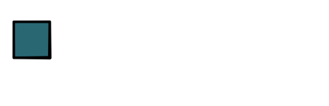

Softmax¶
Sigmoid¶
The key function that we have relied on for calculating loss so far is the sigmoid function. For strong negative inputs, it goes to zero, and for strong positive, it goes to 1. In between, it forms a smooth S-curve.

The sigmoid function can be thought of as a smooth version of the step function \(x > 0\). This function signals whether \(x\) is greater than zero by returning a binary value. Another way to write this is as \(step(x) = \arg\max\{0, x\}\), i.e. the step function returns which argument is bigger, 0 or 1. As we saw in Module-1, the benefit of sigmoid approach is that it makes it easier to aply auto-differentiation for training our models. Whereas step is binary choice, sigmoid is a "softer" differentiable choice.
We make one more connection to another function that we have used throughout the class, the ReLU function that we use for activations. Recall that this function is defined as \(ReLU(x) = max\{ 0, x\}\). Furthermore we have seen that the derivative is:

Connecting these together we can see that,
Fun |
Comparision (x with 0) |
|---|---|
ReLU |
Max |
Step |
Argmax |
Sigmoid |
"Soft" Max |
Multiclass¶
The sigmoid function works great when our machine learning problem is to classify between two possible choices. However, for many problems we may want to do multiclass classification, where we have \(K\) possible output classes to select from. For these problems, we will assume that the less layer of our network should output a size \(K\) vector giving a score for each of the K possible classes.

The natural choice for selecting the value to classify is to pick the argmax element from this vector. The \(argmax\) function takes in a vector and returns a one-hot vector with a 1 value in the dimension with the highest value, and 0 in all the other positions.

While it seems a bit different at first glance, we can view this function as a generalization of the \(x > 0\) function above. Like that function every position is always 0 or 1. We can also see that the derivative will be zero almost every where as a small perturbation to the input scores will not change the output value.
In order to fix this issue, we want a soft version of this argmax function, that like sigmoid smooths over the change. The generalization of sigmoid is appropriately known as the softmax function:

Like with sigmoid a small change to any of the input scores will result in a change to all of the outputs of this function. Also like sigmoid every value is between 0 and 1.
The math for this function is computed in the following way:
As this function requires exponentiating the score values, it can be numerically unstable in practice. Therefore it is common to use a numerical trick to instead compute the log of the softmax function (this is common for sigmoid as well, but we ignored it in earlier modules)
Where \(m\) is the max element of textbf{x}. This trick is common enough that you can get a nice derivation on wikipedia.
Speaking of max, we can also add a max operator to our code base. We can compute max of a vector (or tensor) as a reduction. This returns a single value of the highest scoring element.
Working again intuitively, we can think about how changes to the input impact this value. Ignoring ties, only the element that had the highest scoring value will have any derivative, and its derivative will be 1. Thereforce the gradient of the max reduction will be a one-hot vector of the highest-scoring element, i.e. the argmax function.
Binary |
Multiclass |
|---|---|
ReLU |
Max |
Step |
Argmax |
Sigmoid |
Softmax |